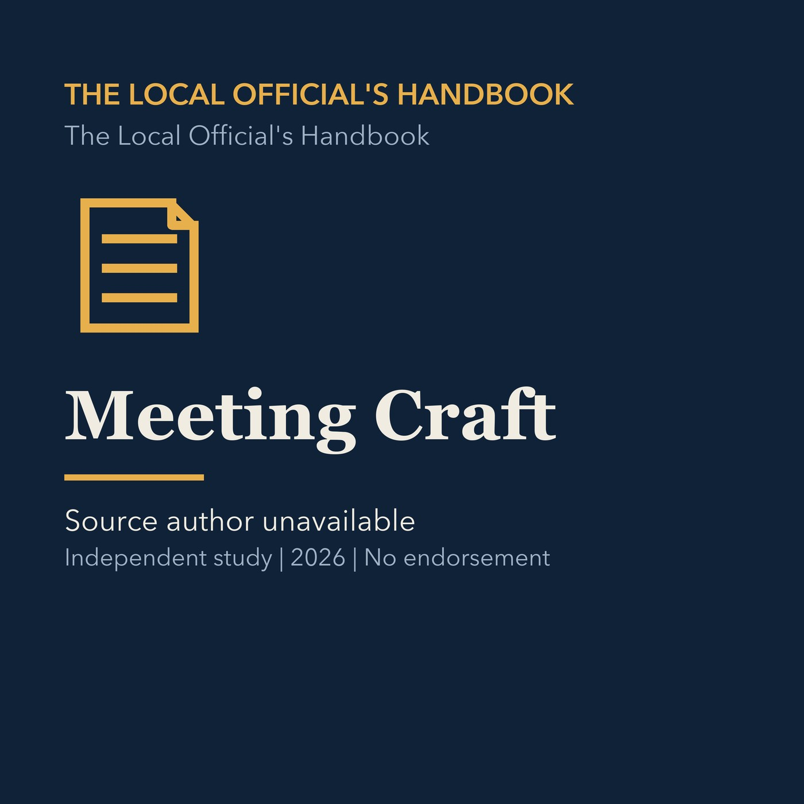

EPISODE 09
Meeting Craft
Covers agenda preparation, questions, motions, findings, conditions, and handling difficult public meetings.

- Stable GUID
9bf19d74-1ce0-5df7-95e7-a9a36a9edff4- Release
- local-officials-handbook-v2026.2
- SHA-256
3b094370165470aee48c2448f9c7c782c78f8fc8a5fc0e20b7827dd66db42cdc